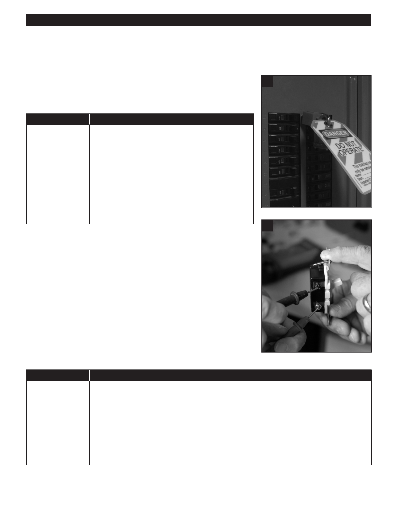

PA RT I C I PA N T R E S O U R C E G U I D E
Testing a Three-way Wall Switch (Continued)
How-to Steps
1. Turn off the power to the switch’s circuit at the main service panel.
1
2. Remove the switch cover and use a circuit tester or multimeter to make sure
the power is off.
If You Use…
Then Follow These Steps…
A circuit tester
1. Touch one probe of the circuit tester to the grounded
metal box or to the bare copper grounding wire.
2. Touch the other probe to each screw terminal.
3. Make sure the tester does not light. If it does, there is
still power entering the box.
A multimeter
1. Set the meter to AC volts.
2. Touch one probe of the meter to the grounded metal
box or to the bare copper grounding wire.
3. Touch the other probe to each screw terminal.
4. Make sure the meter shows 0 to 2 volts. If the number
is higher, there is still power entering the box.
7
3. Disconnect the old switch by removing the top and bottom screws holding the
switch to the electrical box that is mounted in the wall.
4. Without touching any wires, gently pull the switch toward you to expose the
wires on the side and rear. If a wire is loose or broken, you’ve probably found
the problem.
5. Locate the dark “common” screw terminal, and use masking tape to label the
“common” wire attached to it.
6. Disconnect the wires and remove the switch.
7. Use a continuity tester or multimeter to see if the switch is good or bad.
If You Use…
Then Follow These Steps…
A continuity tester
1. Attach the clip of the tester to the dark common screw terminal.
2. Touch the tester probe to one of the other screw terminals.
3. Turn the switch from UP or DOWN. The switch is good if the tester lights when the switch lever is
in one position, but not both.
A multimeter
1. Set the meter to R X 1.
2. Place a probe on each screw terminal.
3. Turn the switch from UP or DOWN.
4. Check the meter. The switch is good if the meter reading changes from infinity to zero.
42